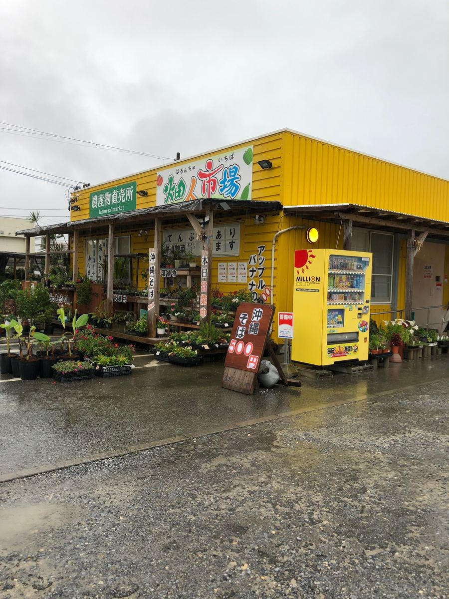
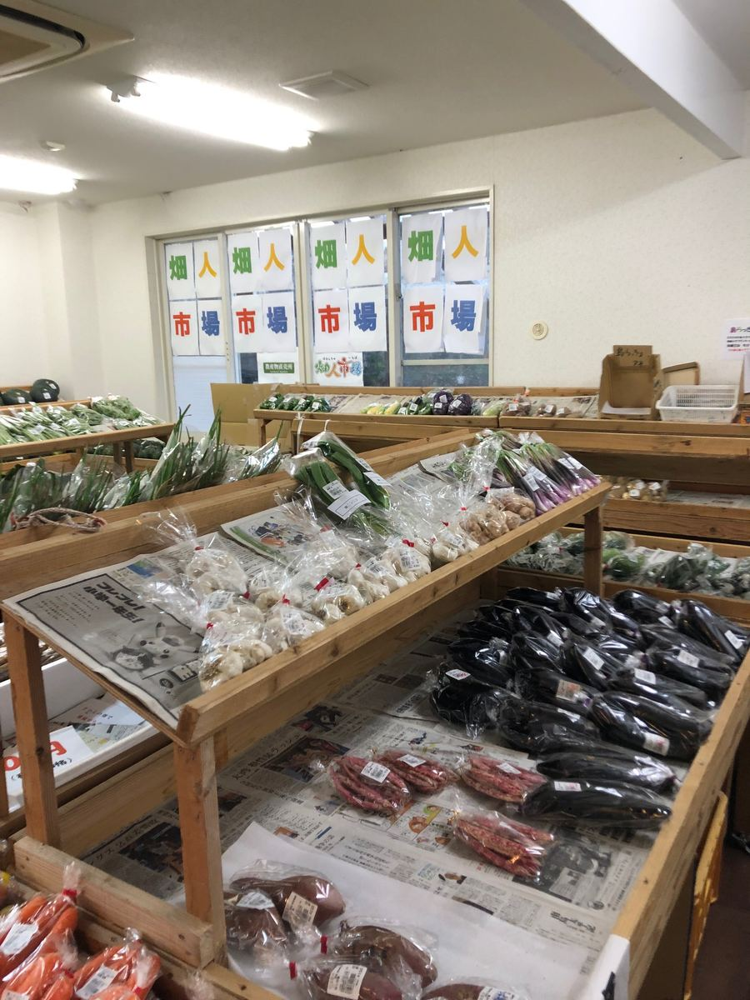
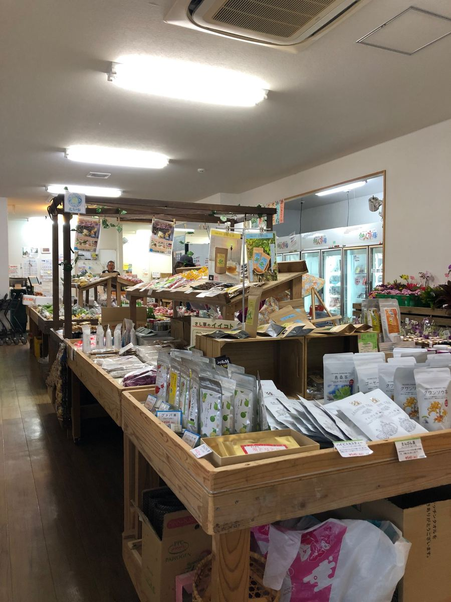
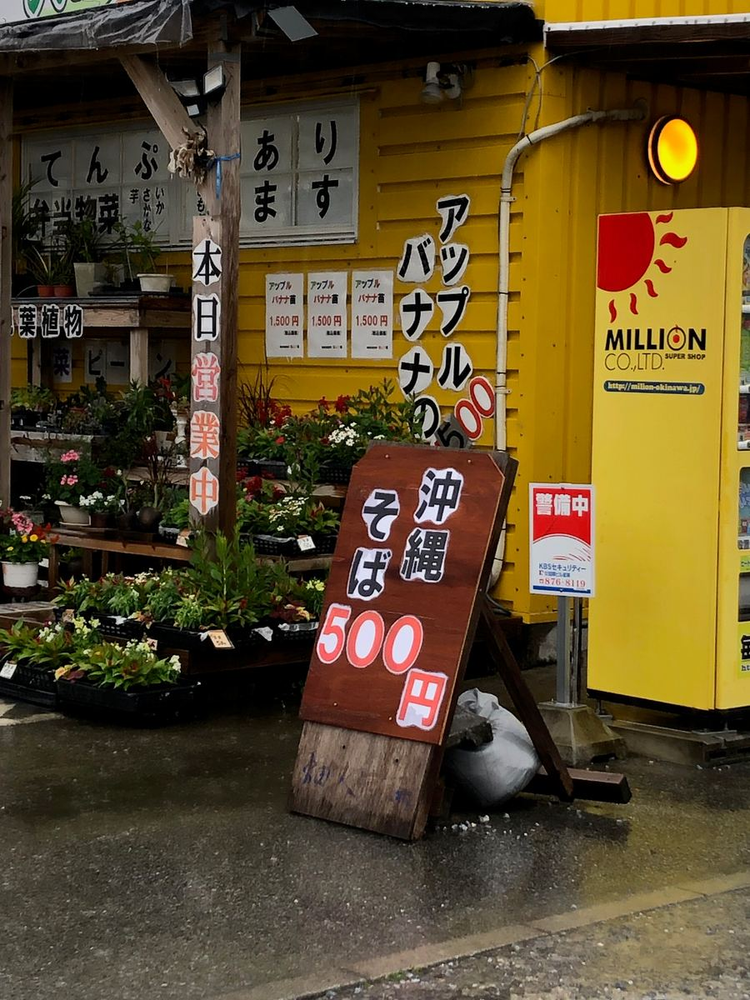
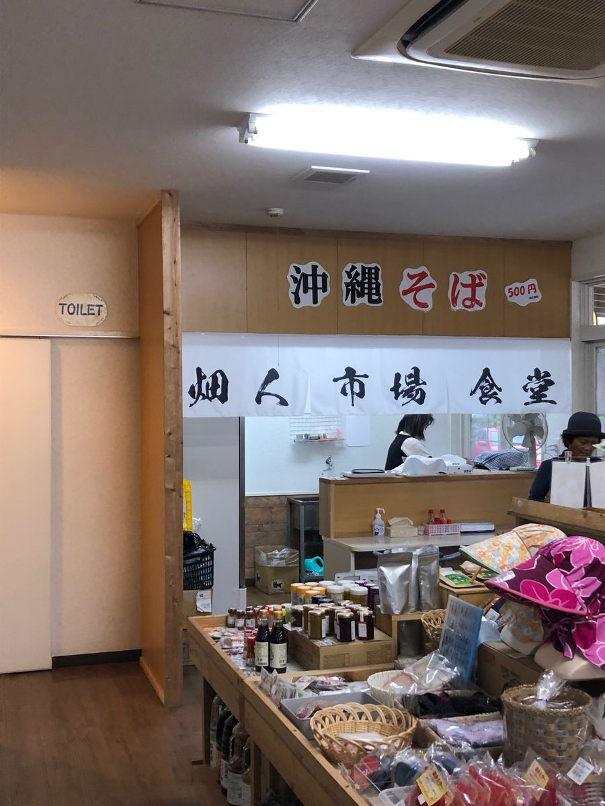
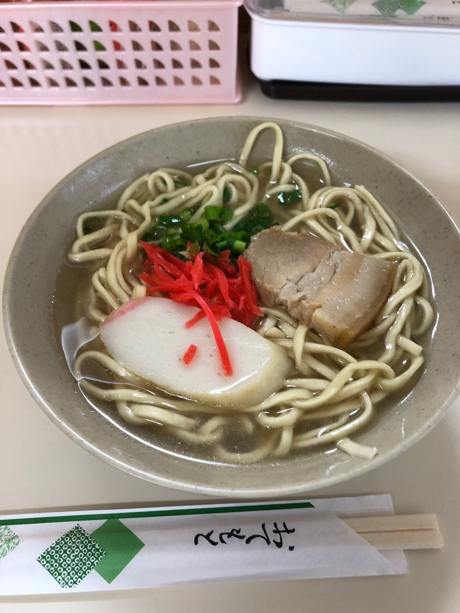
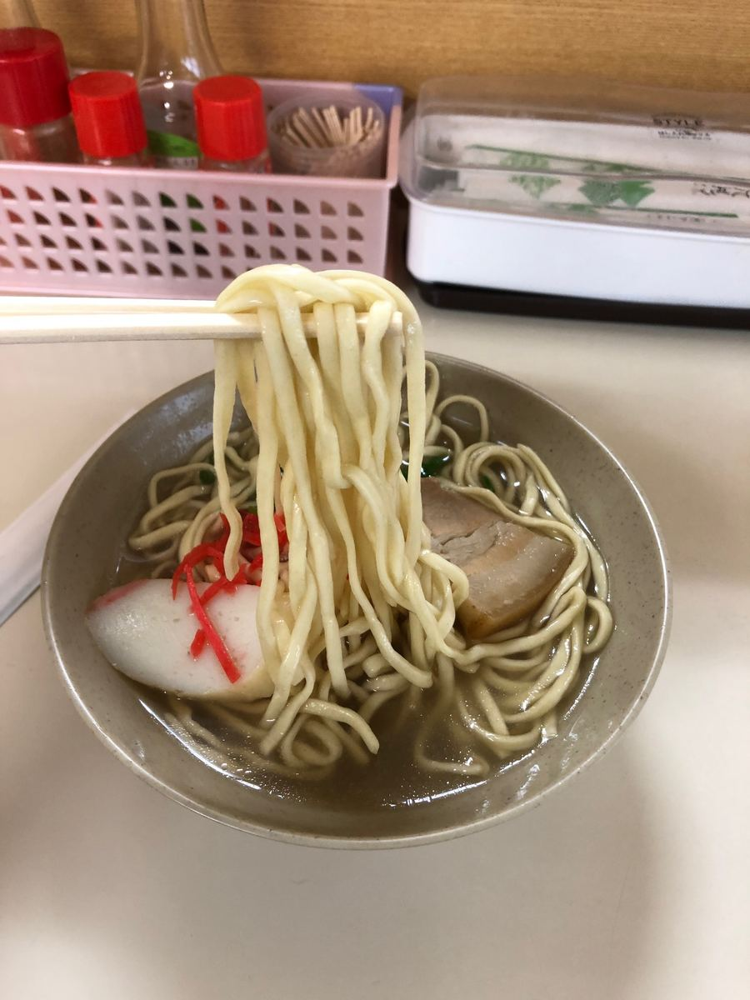

오키나와 소바 순례 여행, 이번에는 이토만시 자하에 있는 “농산물 직판장 하타비토 시장”에 다녀왔어요🍜
2025.5에 먹었습니다😄

선명한 노란색 건물이 표지이고, 가게 안에는 현지의 신선한 채소와 특산품이 쭉 늘어서 있어요. 동네 할머니들의 쉼터 같은, 참 따뜻한 분위기네요😊
장 보면서 유타쿠(수다)를 나누는 모습을 보면 지역에서 사랑받는 곳이구나 싶어요.


자, 이곳에서 먹을 수 있는 오키나와 소바 메뉴는 “오키나와 소바” 단 하나! 고민할 필요 없는 깔끔한 승부네요😄
가격은 무려 500엔. 요즘은 오키나와 소바도 값이 올랐기 때문에 원코인으로 먹을 수 있다는 건 반갑네요.



우선 국물부터. 돼지뼈 육수 국물로, 짠맛이 확실히 느껴지는 타입이네요.
면은 가는 스트레이트 타입으로 부드럽게 마무리되어 있어요. 옛날 그대로의 순한 식감입니다.

고명은 삼겹살 조림(산마이니쿠)에 어묵(가마보코), 붉은 생강 초절임이 올라간 심플한 구성. 삼겹살 조림(산마이니쿠)은 적당히 간이 배어 있어서 좋은 느낌인데, 힘줄 같은 질긴 식감은 대단했어요^^;
양은 그럭저럭이라 든든히 먹고 싶은 분에게는 부족할 수도 있어요. 장 보는 김에 먹는 간식으로 딱 좋은 볼륨감이네요. 500엔이라는 가격을 생각하면 가성비는 좋다고 생각합니다😄
평가(9점/15점): 맛은 아주아주 평범한 한 그릇이었지만, 지역의 공기까지 함께 맛볼 수 있는 것이 이런 직판장 식당의 매력이죠. 이토만 방면으로 드라이브하실 때는 신선한 채소를 사는 김에 원코인 한 그릇을 맛보시는 건 어떨까요?👋
면: ★★★☆☆（3）
수프: ★★★☆☆（3）
토핑: ★★★☆☆（3）